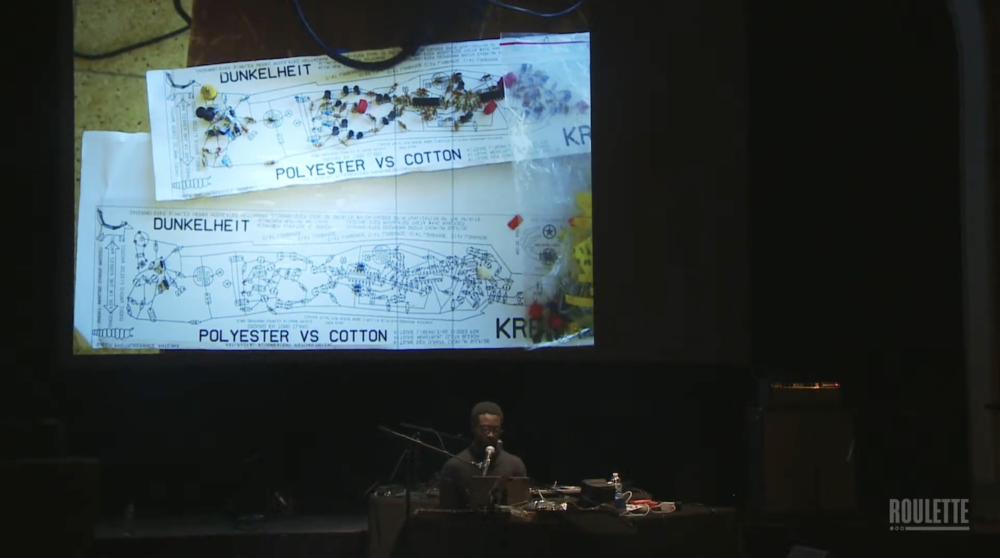
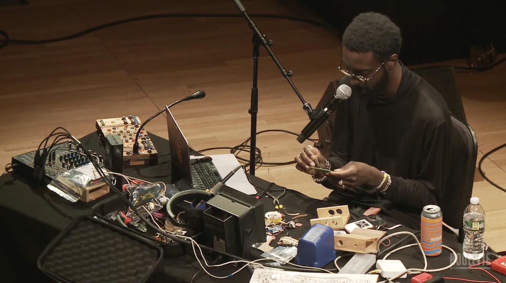
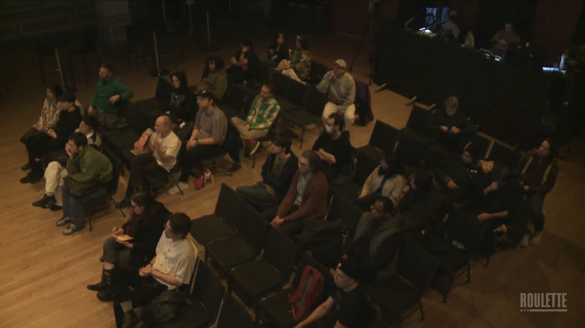
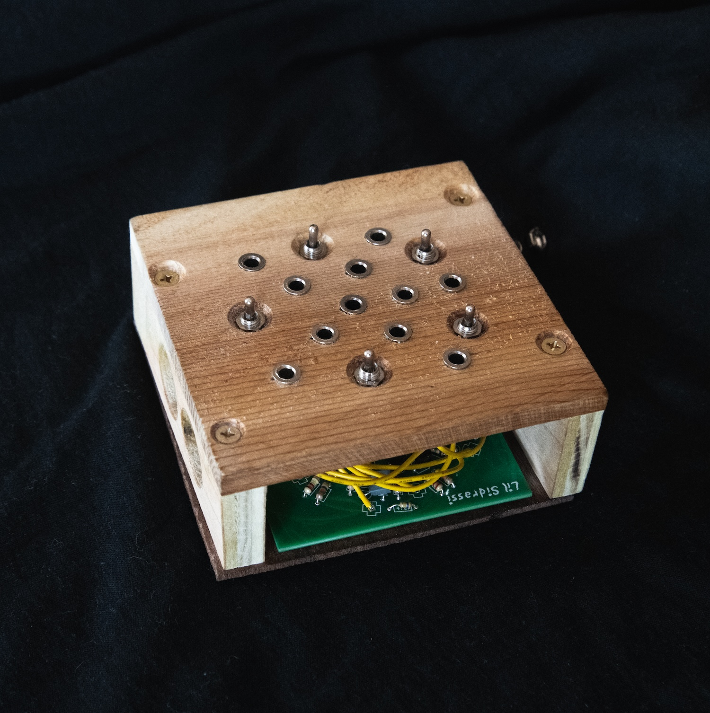
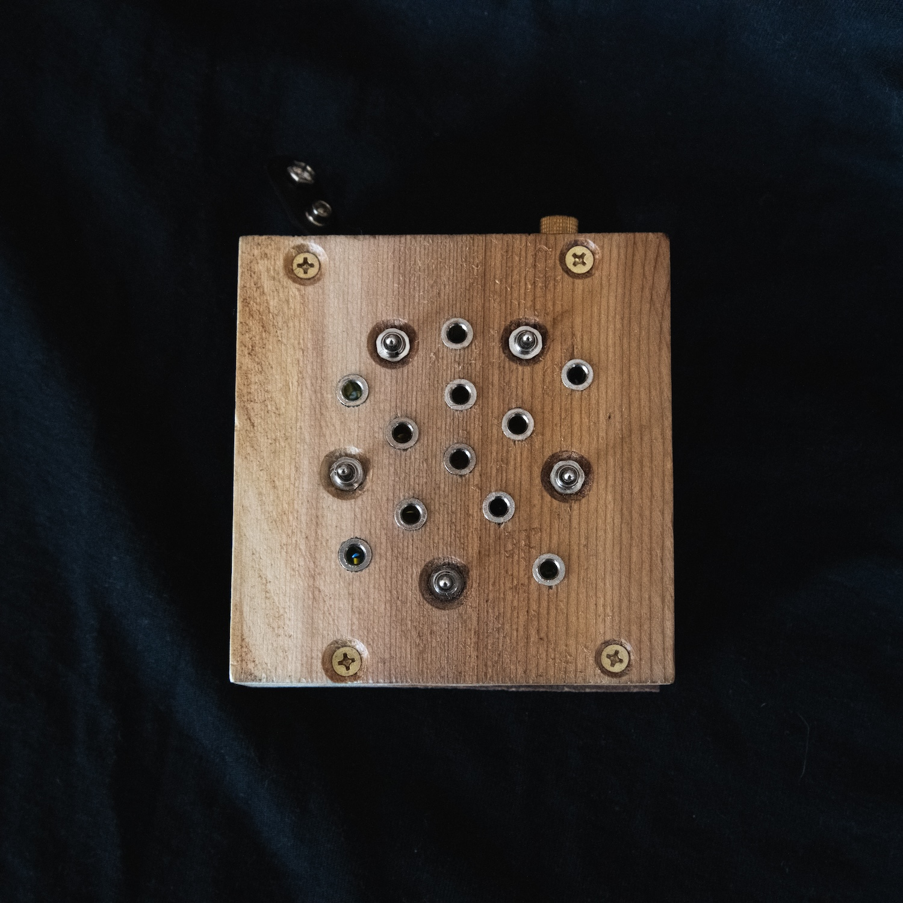

Workshop/Instruemnt
Saturday, March 1, 2025
5:00 pm
Roulette, New York, NY
This workshop is part of Roulette’s annual Mixology Festival, which highlights novel approaches to technology in music and media arts, since 1991—supported in-part by mediaThe Foundation.




